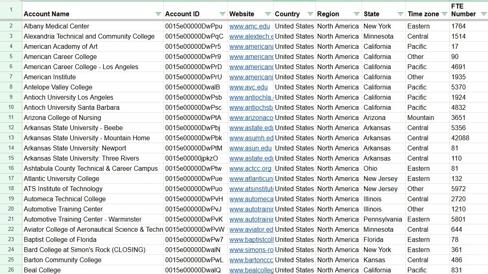
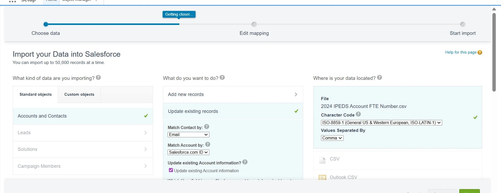
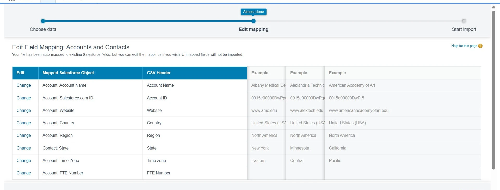

Restored firmographic accuracy across ~9,000 Salesforce accounts by sourcing institutional data from IPEDS, normalizing it in Google Sheets, and re-importing by Account ID - improving segmentation, territory reporting, and CRM reliability.
Large-scale firmographic cleanup and structured re-import designed to restore CRM reliability for segmentation, reporting, and outbound targeting across thousands of institutional accounts.
The Salesforce account base contained thousands of records with missing or inconsistent firmographic data. Critical targeting fields such as institutional size, domain, geographic location, and time zone were unreliable. Firmographic data was sourced from IPEDS - the Integrated Postsecondary Education Data System - exported as CSV, normalized in Google Sheets, and re-imported to Salesforce by Account ID to restore CRM data integrity.


